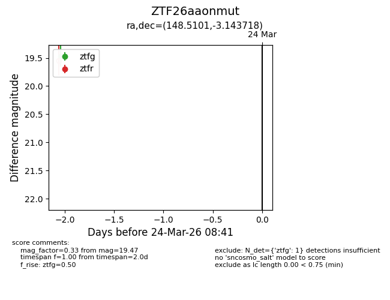
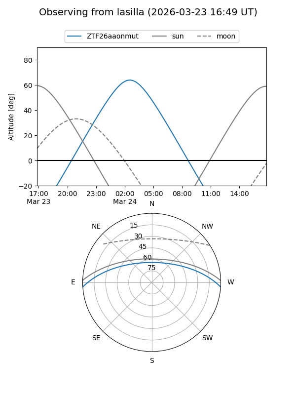
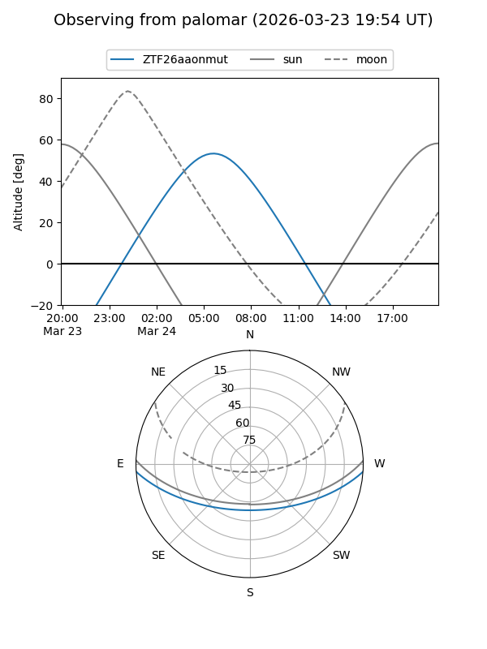

ZTF26aaonmut
Target ZTF26aaonmut at 2026-03-24 08:43
Aliases and brokers:
FINK: link
Lasair: link
ALeRCE: link
alt names
ZTF26aaonmut (ztf,fink_ztf)
Coordinates:
equatorial (ra, dec) = 148.5101,-3.14372
equatorial (HMS+DMS) = 09:54:02.43,-03:08:37.38
galactic (l, b) = (241.1404,+37.62263)
Flags:
Photometry:
last ztfg=19.47
1 ztfg detections
Lightcurve

Visibility


Additional plots